Código
Potência nominal: 11040.0 W
Corrente de projeto I_B = 42.6 AInstalações Elétricas - Ademaro A. M. B. Cotrim
Capítulo 13 - Dimensionamentos
UFMG - DEE
A NBR 5410 trata separadamente dois grupos de cargas a motor:
Consultar sempre a concessionária para partida direta de motores acima de 3,7 kW (5 CV) em rede pública de baixa tensão.
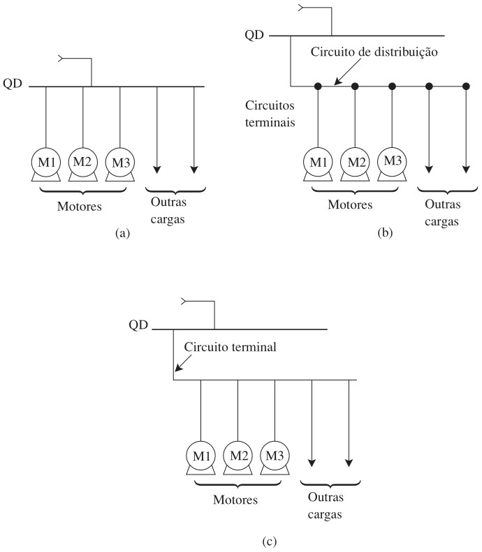
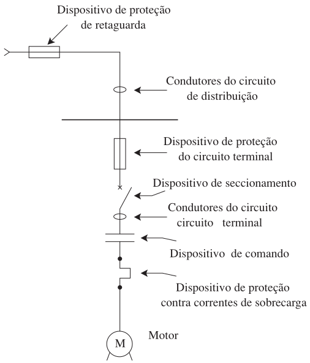
Sempre que possível, a partida deve ser direta — a plena tensão, via contator.
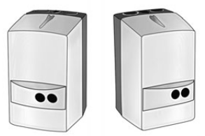
Conjuntos pré-montados reúnem: dispositivo de comando (contator), proteção contra sobrecarga (relé bimetálico) e proteção do circuito terminal contra curto-circuito (fusível).
Quando a partida direta causa quedas de tensão inaceitáveis (concessionária costuma exigir tensão reduzida acima de 5 CV), usam-se sistemas de partida indireta:
Na ligação estrela, a corrente cai para 25%–33% da corrente em triângulo — e o conjugado cai na mesma proporção. Por isso só funciona bem quando o motor tem conjugado de partida elevado e parte em vazio ou com carga parcial.
Exige motor com ligação em dupla tensão (ex: 220/380 V) e 6 bornes acessíveis.
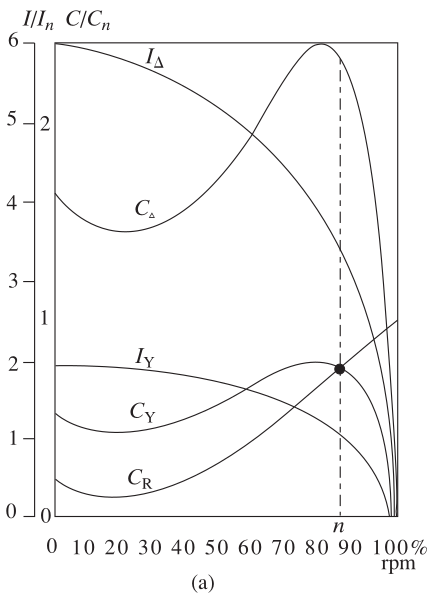
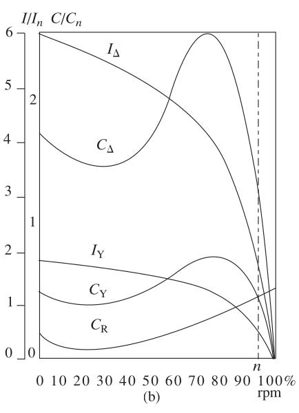
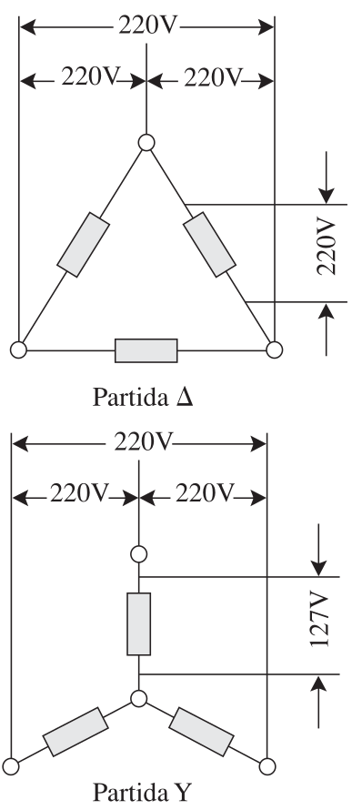
Fig. 5: Esquema de tensões na ligação Y.
Usa um autotransformador (taps típicos de 50%, 65%, 80%) para reduzir a tensão de partida, mantendo conjugado suficiente sob carga.
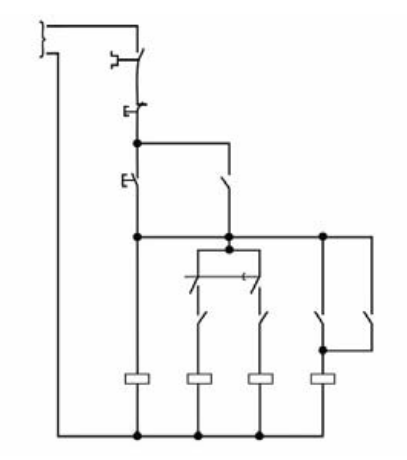
Fig. 6: Chave compensadora automática
Dispositivo eletrônico (ponte de tiristores/SCR) que controla a tensão eficaz aplicada ao motor, suavizando a partida sem os picos das chaves eletromecânicas.
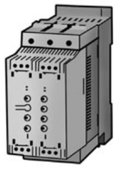
Fig. 7: Soft-starter
Tecnologia by-pass: após a partida, um contator substitui os tiristores, evitando seu sobreaquecimento.
Aplicações: bombas, ventiladores, exaustores, compressores, esteiras, escadas rolantes.
Para um único motor: \[ I_Z \ge f_S \cdot I_M \tag{13.1} \]
onde \(f_S\) é o fator de serviço (multiplicador aplicável à potência sem comprometer a elevação de temperatura do enrolamento).
Para vários motores (\(n\)) e outras cargas (\(m\)) no mesmo circuito: \[ I_Z \ge \left[\sum_{i=1}^n f_{Si} I_{Mi} + \sum_{j=1}^m I_{Nj}\right] \tag{13.2} \]
Motor de gaiola trifásico: \(P_N=15\text{ CV}\), \(U_N=220\text{ V}\), \(\eta=0{,}8\), \(\cos\varphi=0{,}85\).
\[ I_B = \frac{P_N}{\sqrt{3}\,\eta\,U_N\cos\varphi} \tag{13.9} \]
Condutor isolado Cu/PVC, \(S=16\text{ mm}^2\), circuito com 3 condutores carregados, eletroduto embutido em alvenaria, \(\theta_A=30^\circ\text{C}\).
\[ I_Z \approx a \cdot S^{0{,}625} \tag{13.15} \]
Estimativa (Expressão 13.15): I_Z ≈ 67.9 A
Valor tabelado (Tabela 9.4, B1/3cc, 16mm²): I_Z = 68 ADurante a partida, a queda nos terminais do dispositivo de partida não deve ultrapassar 10% de \(U_N\) (considerando a corrente de rotor bloqueado, \(\cos\varphi\approx0{,}3\) na falta de valor mais preciso). Em regime normal, os limites da Seção 9.8 se aplicam (tipicamente 7%).
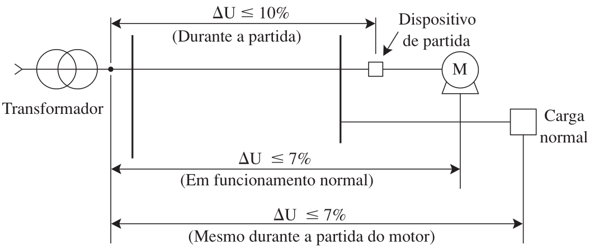
Fig. 8: Limites de queda de tensão em instalação de motores e cargas normais
Carga concentrada no fim do circuito: \[ \Delta U = \sqrt{t}\, I_B\, l\, \Delta U^*\times 10^{-3} \]
Circuito trifásico, \(U_N=220\text{ V}\), cabos Cu/PVC \(25\text{ mm}^2\), \(I_B=75\text{ A}\), \(l=60\text{ m}\), \(\cos\varphi=0{,}8\), \(\Delta U^*=1{,}33\ \text{V/A.km}\) (Tabela 9.19).
I_B, l = 75.0, 60.0
dU_unit = 1.33e-3 # ΔU* [V/A.km] já incorpora o √3 do trifásico (Tabela 9.19), aqui em V/A.m
# Expressão 13.21: ΔU = I_B × l × ΔU*
dU = I_B * l * dU_unit
dU_pct = 100 * dU / 220
println("Queda de tensão: ΔU = $(round(dU, digits=2)) V ($(round(dU_pct, digits=2))%)")
println(dU_pct <= 7 ? "Dentro do limite normativo (7%)" : "FORA do limite!")Queda de tensão: ΔU = 5.98 V (2.72%)
Dentro do limite normativo (7%)Pode ser feita por:
O relé deve ter corrente nominal igual a \(f_S \cdot I_M\) (ou faixa de ajuste que a contenha) — tolera-se até 12% de diferença entre valores comerciais discretos.
\[ I_B \le I_N \le I_Z \tag{13.29} \] \[ I_2 \le 1{,}45\, I_Z \tag{13.30} \] \[ I_N \le \frac{1{,}45}{\alpha}\, I_Z \tag{13.31} \]
Idêntico ao critério do Capítulo 11 — só que agora \(I_N\) é a corrente do relé/disjuntor do motor, não necessariamente atrelada a um disjuntor comercial padrão.
Três condutores Cu/PVC de 4 mm², eletroduto embutido em alvenaria. \(I_Z=28\text{ A}\) (Tabela 5.27/9.4).
I_Z = 28.0
alpha = 1.75 # Tabela 6.1, disjuntor termomagnético
# Expressão 13.29: I_N <= I_Z
disjuntores = [16, 20, 25, 32, 40]
I_N = maximum(filter(x -> x <= I_Z, disjuntores))
println("Maior disjuntor com I_N <= I_Z=$(I_Z)A: I_N = $(I_N) A")
# Expressão 13.31: I_N <= 1.45/alpha * I_Z
limite_31 = 1.45/alpha * I_Z
cond = I_N <= limite_31
println("Limite da Expressão 13.31: 1.45/$(alpha) × $(I_Z) = $(round(limite_31, digits=1)) A")
println("I_N=$(I_N)A atende? ", cond ? "OK" : "FALHA -> usar disjuntor de 20 A")Maior disjuntor com I_N <= I_Z=28.0A: I_N = 25 A
Limite da Expressão 13.31: 1.45/1.75 × 28.0 = 23.2 A
I_N=25A atende? FALHA -> usar disjuntor de 20 ASe a sobrecarga já é coberta por relé térmico, a proteção de curto pode ficar a cargo de um dispositivo exclusivo:
| \(I_P\) (corrente de rotor bloqueado) | Fator |
|---|---|
| \(\le 40\) A | 0,5 |
| \(40\) a \(500\) A | 0,4 |
| \(>500\) A | 0,3 |
Motor com corrente de rotor bloqueado \(I_P=76\text{ A}\) — fusível gG previamente escolhido: \(I_N=32\text{ A}\).
I_P = 76.0
fator = 0.4 # Tabela 13.1, faixa 40 < I_P <= 500
I_N_max = fator * I_P
println("Corrente nominal máxima calculada: $(fator)×$(I_P) = $(I_N_max) A")
# 30.4 A não é um valor padronizado de fusível -- a norma permite usar
# o fusível de corrente nominal PADRONIZADA imediatamente superior.
fusiveis_padrao = [20, 25, 32, 40, 50]
I_N_escolhido = minimum(filter(x -> x >= I_N_max, fusiveis_padrao))
println("Fusível padronizado imediatamente superior: $(I_N_escolhido) A")
println("Fusível de 32 A (previamente escolhido) atende a condição.")Corrente nominal máxima calculada: 0.4×76.0 = 30.400000000000002 A
Fusível padronizado imediatamente superior: 32 A
Fusível de 32 A (previamente escolhido) atende a condição.\[ I_{CN} \ge I_k \tag{13.34} \] \[ \int_0^t i^2\,dt \le K^2S^2 \tag{13.35} \] \[ t_{\text{máx}} = \frac{4\,\rho^2 K^2 l^2\,(1+\alpha_{20}\Delta\theta)^2}{0{,}64\,U^2} \tag{13.39} \]
onde \(\rho=0{,}027\ \Omega\text{mm}^2/\text{m}\) (cobre) e \(K\) é o mesmo do Capítulo 11 (115 para PVC).
Disjuntor bipolar NBR NM 60898, \(I_N=36\text{ A}\), protegendo um condutor Cu/PVC de \(4\text{ mm}^2\), \(l=30\text{ m}\), \(U=220\text{ V}\).
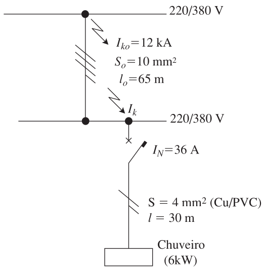
Fig. 9: Diagrama do circuito do Exemplo 18
U, S, l, K, rho = 220.0, 4.0, 30.0, 115.0, 0.027
# Corrente de curto-circuito presumida mínima -- Expressão 13.37
Ikmin = (0.8*U*S) / (rho*2*l)
println("I_kmín = $(round(Ikmin, digits=1)) A")
# Tempo máximo de atuação admissível pelo condutor -- Expressão 13.39
tmax = (4*rho^2*K^2*l^2) / (0.64*U^2)
println("t_máx admissível pelo cabo = $(round(tmax, digits=2)) s")
# Múltiplo do I_N para entrar na curva de atuação do disjuntor
println("I_kmín / I_N = $(round(Ikmin/36, digits=1)) (dispara em ~0,005-0,02 s, << t_máx: seguro)")I_kmín = 434.6 A
t_máx admissível pelo cabo = 1.12 s
I_kmín / I_N = 12.1 (dispara em ~0,005-0,02 s, << t_máx: seguro)Condutor Neutro: dimensionado pela Seção 9.9 (Tabela 9.22), considerando desequilíbrio e conteúdo harmônico.
Condutor de Proteção (PE): dimensionado pela Seção 8.7 (Tabela 8.7):
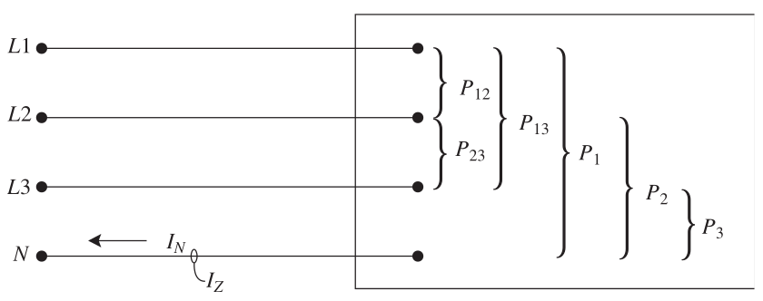
Circuito 3F+N (127/220 V) alimentando administração. Potência total \(P_A = 43.240 \text{ W}\), \(\cos\varphi=0{,}95\). Nenhuma fase possui carga ligada ao neutro superior a 10% do total.
P_total = 43240.0 # W
U_linha = 220.0 # V
fp = 0.95
I_B = P_total / (sqrt(3) * U_linha * fp)
println("Corrente de Projeto (Fase): $(round(I_B, digits=1)) A")
# Pela Tabela 9.4 (B1/3cc), seção de 50 mm² conduz ~119A (queda de tensão desprezada)
S_fase = 50.0
println("Seção da Fase adotada: $(S_fase) mm²")
# Neutro: mínimo normativo (Tabela 9.22) para esta condição
S_neutro = 25.0
println("Seção do Neutro adotada (Norma): $(S_neutro) mm²")
# Proteção (PE): Tabela 8.7 -> Como S_fase > 35, S_PE = S_fase / 2
S_PE = S_fase / 2
println("Seção do Condutor de Proteção (PE): $(S_PE) mm²")Corrente de Projeto (Fase): 119.4 A
Seção da Fase adotada: 50.0 mm²
Seção do Neutro adotada (Norma): 25.0 mm²
Seção do Condutor de Proteção (PE): 25.0 mm²Um curto-circuito na extremidade do circuito deve gerar corrente de defeito suficiente para o dispositivo atuar em tempo seguro (Tabela 8.2), o que impõe um comprimento máximo (\(l_{\text{máx}}\)) ao circuito:
\[ l_{\text{máx}} = \frac{0{,}8\, c\, U_0\, S}{2\,\rho\, I_a\,(1+m)} \tag{13.40} \]
onde \(c\approx0{,}8\), \(m=S_L/S_{PE}\), e \(I_a\) é a corrente que garante a atuação no tempo exigido.
Iluminação industrial (F+N), \(U_0=127\text{V}\). Cabo 6 mm² (\(S_{PE}=6\text{mm}^2 \Rightarrow m=1\)), \(l=54\text{m}\). Disjuntor de 32 A, precisando atuar em \(t=0{,}35\text{s}\) (curva do disjuntor \(\Rightarrow I_a=7{,}2\times32=230{,}4\text{ A}\)).
U_o = 127.0
S = 6.0
I_a = 230.4 # Corrente que garante disparo no tempo t
rho = 0.0225 # Resistividade do cabo nas condições de falha
# S_PE = S_L = 6mm² (m=1) neste circuito -- Expressão 13.41 (esquema TN, sem neutro distribuído)
c = 0.8
l_max = (c * U_o * S) / (2 * rho * I_a)
println("Comprimento Máximo Normativo: $(round(l_max, digits=1)) m")
println("Comprimento Real: 54 m")
println(54 <= l_max ? "CONCLUSÃO: Instalação Segura!" : "CONCLUSÃO: Risco de Choque Elétrico Letal!")Comprimento Máximo Normativo: 58.8 m
Comprimento Real: 54 m
CONCLUSÃO: Instalação Segura!O cabo de seção técnica (mínimo que atende aos critérios térmicos/queda de tensão) minimiza o investimento inicial, mas tem maior resistência — logo, maiores perdas Joule ao longo da vida útil do cabo (20–30 anos).
\[ C = C_l(S) + C_J(S) \]
A seção econômica (\(S_E\)) minimiza o custo total: compra + instalação + valor presente das perdas de energia futuras, segundo a IEC 60287-3-2.
Com hipóteses simplificadoras (perda pelicular desprezada, \(\theta_m=50^\circ\text{C}\), \(t=10\%\) a.a., \(b=0\)), a Expressão 13.74 se reduz a:
\[ S_E = I_B\sqrt{\dfrac{H\cdot e\cdot(1-0{,}937^N)}{1{,}84\,B\,G'}} \]
Circuito trifásico Cu/PVC/PVC: \(I_B=143\text{ A}\), \(\theta_A=30^\circ\text{C}\), \(e=\text{US\$}36\times10^{-3}/\text{kWh}\), \(H=2.250\text{ h/ano}\), \(N=20\) anos, \(G'\approx117\ \text{US\$/mm}^2\text{.km}\) (Tabela 13.11).
Resultado do livro: \(S_E \approx 55{,}4\text{ mm}^2 \Rightarrow\) adota-se 50 mm² (padronizada).
Cada seção normalizada só é a mais econômica dentro de uma faixa de corrente, delimitada por (Expressões 13.66/13.67):
\[ I_B = \sqrt{\dfrac{C_{l2}-C_{l1}}{M\,(R_1-R_2)}}\times10^3 \]
Vamos verificar os limites da faixa econômica da seção de 50 mm² com os dados reais do Exemplo 23 (Tabela 13.9/13.11).
# Resistência R(S) a θm=50°C -- Expressão 13.63 (cobre, B=1), coeficiente 19,8 obtido no Exemplo 23
R(S) = 19.8 / S
R1, R50, R2 = R(35.0), R(50.0), R(70.0)
println("R(35mm²) = $(round(R1, digits=3)) Ω/km")
println("R(50mm²) = $(round(R50, digits=3)) Ω/km")
println("R(70mm²) = $(round(R2, digits=3)) Ω/km")
M = 2534.0 # US$/kW, Expressão 13.75 (calculado no Exemplo 23)
# Preços totais da linha (Tabela 13.11), US$/km
Cl_35, Cl_50, Cl_70 = 12924.0, 17907.0, 24768.0
# Expressões 13.66/13.67
IB_inferior = sqrt(1000 * (Cl_50 - Cl_35) / (M*(R1 - R50)))
IB_superior = sqrt(1000 * (Cl_70 - Cl_50) / (M*(R50 - R2)))
println("\nFaixa econômica da seção de 50 mm²:")
println(" Limite inferior de I_B: $(round(IB_inferior, digits=0)) A")
println(" Limite superior de I_B: $(round(IB_superior, digits=0)) A")
println(" I_B do circuito = 143 A -> ", (IB_inferior <= 143 <= IB_superior) ? "dentro da faixa! Confirma 50 mm²." : "fora da faixa")R(35mm²) = 0.566 Ω/km
R(50mm²) = 0.396 Ω/km
R(70mm²) = 0.283 Ω/km
Faixa econômica da seção de 50 mm²:
Limite inferior de I_B: 108.0 A
Limite superior de I_B: 155.0 A
I_B do circuito = 143 A -> dentro da faixa! Confirma 50 mm².COTRIM, Ademaro A. M. B. Instalações Elétricas. 5ª Edição. São Paulo: Pearson Prentice Hall, 2009.
Quais são as características das cargas industriais consideradas na NBR 5410 para os circuitos terminais?
Motores de indução de gaiola trifásicos de potência não superior a 150 kW (200 CV) e operando em regime contínuo (S1), conforme NBR 7094.
Quais são as características das cargas residenciais/comerciais na NBR 5410?
Motores de potência nominal não superior a 1,5 kW (2 CV), integrantes de aparelhos eletrodomésticos e eletroprofissionais.
Quais são as três configurações clássicas para a ligação de equipamentos a motor?
No caso de partida de motores mais suaves, quais são os três métodos de partida mais utilizados?
Chave estrela-triângulo, chave compensadora (autotransformador) e sistema de partida suave (soft-starter).
Quais são as vantagens e desvantagens da chave estrela-triângulo?
Vantagens: custo reduzido, sem limite de manobras, pouco espaço, corrente de partida reduzida a ~1/3.
Desvantagens: exige motor com 6 bornes acessíveis e tensão de rede compatível com a ligação triângulo; o conjugado também cai para 1/3; se o motor não atingir ~90% da rotação nominal antes da comutação, o pico na troca para triângulo se aproxima do de uma partida direta.
Quais são as vantagens e desvantagens da chave compensadora?
Vantagens: tap ajustável (65%, 80%, 90%), permitindo escolher a redução mais adequada; pico na comutação bem menor que na estrela-triângulo.
Desvantagens: frequência de manobras limitada; bem mais cara e volumosa devido ao autotransformador.
Qual é o limite da queda de tensão nos terminais do dispositivo de partida durante a partida de um motor?
10% da tensão nominal do motor (considerando a corrente de rotor bloqueado, \(\cos\varphi\approx0{,}3\)), respeitados também os limites gerais da instalação (Seção 9.8).
Quais são os dispositivos específicos para proteção contra curto-circuito num circuito de motor?
Disjuntores equipados apenas com disparadores de sobrecorrente instantâneos, ou dispositivos fusíveis com característica gM ou aM.
Quais as etapas de dimensionamento de um circuito em baixa tensão?
Quais são os critérios para escolha da proteção de disjuntores de baixa tensão?
Critério térmico (\(I_B \le I_N \le I_Z\) e \(I_2\le1{,}45\,I_Z\)) e critério de curto-circuito (capacidade de interrupção \(I_{CN}\ge I_k\) e integral de Joule \(\le K^2S^2\)).
UFMG | ELE618 - Sistemas Elétricos Industriais